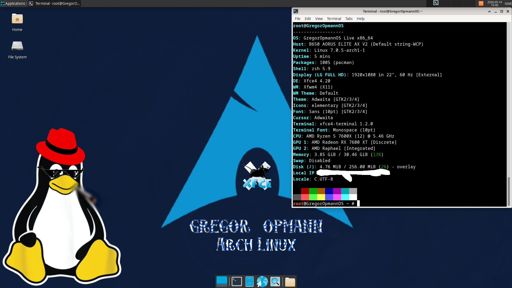

⚠️ Fix the Wallpaper: After first boot, right-click the desktop -> Desktop Settings -> Select default.png. Automatic scripts were scrapped for stability.
Features
Optimized Kernel
Running Linux 7.0.5-arch1-1 for hardware compatibility.
ZSH + Fastfetch
Custom fastfetch configuration with ASCII branding.
Modern Support
Tested on Ryzen 7000 series CPUs and RX 7000 series GPUs.
Included Software
⚡ Core & Terminal
- Desktop: XFCE 4.20 (X11)
- Shell: ZSH + Starship + FZF
- Terminals: xfce4-terminal, Alacritty
- Modern CLI: eza, bat, fd, ripgrep
🛠️ DevOps & SysAdmin
- Containers: Docker + Compose
- Cloud: Terraform, Ansible, Kubectl, Helm
- Networking: Nmap, Wireshark, Tcpdump, Doggo
- Security: Hashcat, ClamAV, Lynis, GUFW
🔧 Repair & Storage
- Filesystems: NTFS-3G, Exfatprogs, Dosfstools
- Recovery: Testdisk, Chntpw, DDRescue, Partclone
- Monitoring: Htop, GDU, NCdu, Smartmontools
- Management: GParted, GSmartControl, NVME-cli
💻 Productivity & Apps
- Browsers: Firefox, Chromium
- Office: LibreOffice Still (Full Suite)
- Media: VLC Media Player
- Dev: Neovim, Python, IPython, Git
⚠️ This live environment automatically logs into XFCE4 as the root user for convenience. GregorOpmannOS is intended for temporary live sessions, recovery tasks, testing, and troubleshooting — not as a hardened & secure daily-driver multi-user operating system. Be careful when modifying or deleting system files.